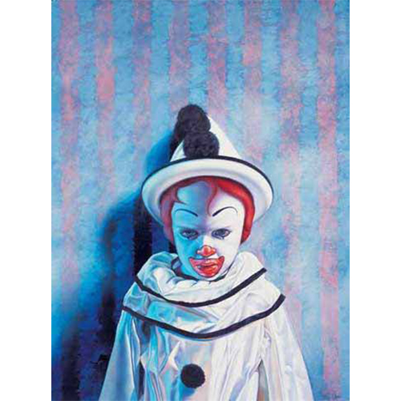
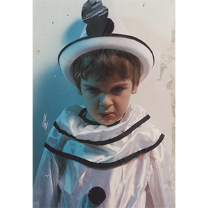

Literature
Ron English, Son of Pop: Ron English Paints His Progeny (Cotati, CA: 9mm Books, 2007), p. 45. ISBN 978-0976632511.


Ron English, Son of Pop: Ron English Paints His Progeny (Cotati, CA: 9mm Books, 2007), p. 45. ISBN 978-0976632511.
